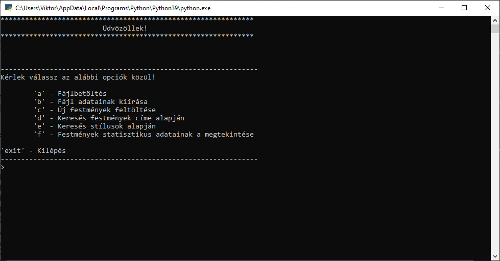

Menü és a hozzá tartozó elemek
Maga a menü több részből tevődik össze, hogy ne terhelje a főprogramot. Így a lehető legtöbb elem, modulonként lett meg valósítva. A bemutátsa kölünkölön lesz bontva, lássunk is hozzá!
Menü:
Itt zajlik az érdemi munka. Ez lényegében a főprogam. Ebben valósul meg a kiválasztás, ide tér vissza minden modul. Itt tud megadott karakterekkel választani a felhasználó. Majd a megadoot karakterrel megyező modulokat meghívva viszi tovább a felhasználót.
